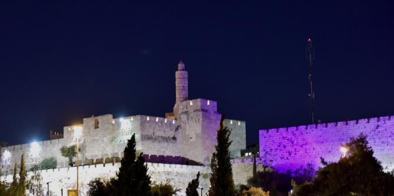

The beginning of July saw a two-day event for graduates of Cohorts 14 and 15 of the Mandel School for Educational Leadership, as part of the continuing study program of the Mandel Graduate Unit. The event focused on the issue of conservation versus innovation in Jerusalem, and included tours of various parts of the city – old, new, and newly revitalized – as a basis for discussion and debate.
The program began with a lecture by Tzachi Asher, an entrepreneur and consultant specializing in artificial intelligence and the history of science from a contemporary perspective. Tzachi reviewed developments in this area with the graduates, and discussed its possible implications for the future world of education.
The graduates then participated in a guided tour by Arnon Brookstein, a graduate of Cohort 6 of the Mandel School for Educational Leadership, who is a tour guide and an expert on Jerusalem. Arnon took the group from the Mandel Graduate Unit on Derech Hevron to the old train station, which has been reborn as a commercial and leisure space. From there they followed in the footsteps of Moses Montefiore to Mishkenot Sha’ananim, tracing the neighborhood from its historical beginnings to its current incarnation as an area for entrepreneurship in the arts and culture.
During the last part of the tour, the graduates walked along the illuminated routes of the Jerusalem Festival of Light, an event that combines the atmosphere of the Old City with innovative art. At the Sephardic House hotel, the graduates met with Rabbi Daniel Bouskila, director of the Sephardic Educational Center – an international educational-cultural organization dedicated to teaching students, rabbis, and community leaders about the importance of the tolerant worldview of classical Sephardic Jewry for the contemporary Jewish world.
The event was created and led by
Dr. Granit Almog-Bareket, a graduate of Cohort 14 of the Mandel School for Educational Leadership and the director of the Mandel Graduate Unit.

{kind=link}